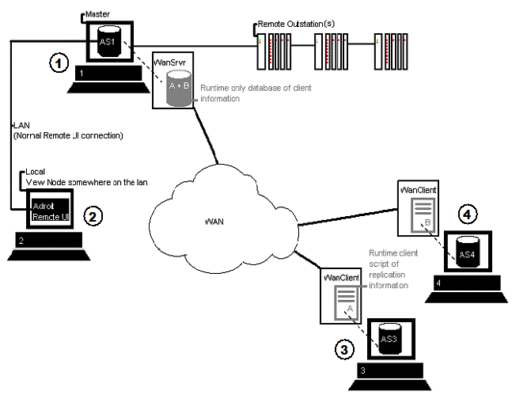

Wanlink allows data to be replicated over a slow or Wide Area Network (WAN) from one Agent Server to another. In other words, it allows remote Agent Servers to behave as if they were normal remote nodes on a Local Area Network (LAN).
The following diagram and explanation, briefly describes how Wanlink works and how it is configured:

Where:
Computer 1 is the "primary" Agent Server (AS1), which obtains its IO from its remote outstations. WanServer is also running on this computer, which is connected to AS1, no other configuration is required.
When a remote Agent Server connects to the primary Agent Server using Wanlink, the remote WanClient will connect to and upload its configuration to the WanServer.
The WanServer will then establish connection to the primary computer’s Agent Server (AS1) and communication based on this configuration will commence from then on.
Computer 2 is a Remote node, which is able to view and control data on (AS1) directly because it on the same LAN.
Note: Since this computer does not have its own Agent Server, it directly accesses the primary computer’s Agent Server (AS1).
Computer 3, 4 are the "remote Agent Servers", these Agent Servers (AS3), (AS4), may or may not have local data derived from other IO sources. WanClient needs to be running on each of these computers.
The Configuration file of each WanClient, must essentially specify how to communicate to the WanServer and which local tags in these remote Agent Servers (AS3), (AS4) need to be "linked" to tags that reside in the primary Agent Server (AS1) and the communication settings to its WanServer connected to the primary Agent Server (AS1).
Note: It is not necessary to link to all the tags in the primary Agent Server (AS1), only link those tags that are required.
The WanClient configuration, is performed using the WanClient Configurator, in the following order:
Note: This server is "remote" in that it is on the other side of the WAN from the computer that is running WanClient.
Note: With this method of linking a remote Agent Server (Computers 3 and 4) can operate as if it was a remote node (Computer 2) of the primary Agent Server it is being connected to (Computer 1).
Note: This is also possible to manually edit the CSV files in which the links, tag groups and servers are stored, in order to perform bulk configurations etc.
PLEASE NOTE 1: The full tag description must be specified when configuring a remote or local link in the WanClient e.g. "MYDIGITAL.rawValue" If the slot name is omitted, the tag link will fail.
PLEASE NOTE 2: Historical data cannot be transferred over Wanlink, only current runtime values will be sent and retrieved.
It is possible for a linked tag on a remote Agent Server (AS3),(AS4) to be logged as usual, but then Wanlink connection must be maintained at all times to ensure that no "holes" in the remote datalogs occur.